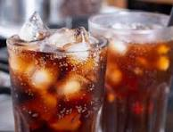

cola drink
recipe of cola drink
To make a homemade cola drink, mix 1 cup sugar, 1/4 cup water, 1/4 cup cola flavoring (available at most baking supply stores or online), 1/4 tsp citric acid, and 1/4 tsp c Serve the cola drink over ice and enjoy! Note: You can also add some lemon or lime juice to give it a twist. Also, if you can't find cola flavoring, you can try using a combination of vanilla extract, lime juice, and cinnamon to create a similar flavor profile.affeine powder (optional) in a large pitcher. Stir until the sugar is dissolved. Add 4 cups of cold water and stir well. Add 1/2 tsp caramel color (optional) to give it a dark color. Chill the mixture in the refrigerator for at least 30 minutes.
back to menu